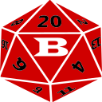

Local development · October 21, 2026
WayBeyond20 v1.73.2
Complete changes from the Beyond20 2.20.1 base
Proficiency and saving-throw synchronization
Extension version 2.20.129. Corrects proficiency-label parsing and writes native 2014 skill proficiency/expertise flags and saving-throw bonuses/proficiency, alongside wb20_* macro attributes. No combat or resource changes. Local candidate; live macro retest pending.
Optional DDB-to-Roll20 core data
Extension version 2.20.128. The optional DDB-to-Roll20 sync now writes the visible 2014 sheet fields as well as wb20_* macro attributes. It does not import spells, inventory, features or combat state. The transfer to the 2014 character was observed live; visible field acceptance awaits an extension reload. Local candidate, not published.
Preserve combat through Roll20 loading
Extension version 2.20.126. The turn feed waits for the editor to finish loading instead of treating a temporary empty order as an ended battle. This prevents an unintended turn-count reset and resource refill during refresh. A genuinely loaded empty order still ends combat. Full live turn rotation passed; this correction passes local lifecycle regressions and awaits live reload verification. Not published.
Reliable rapid Undo
Extension version 2.20.125. Target edits update the panel immediately, without waiting for the storage callback. This closes a timing gap before the next mouse press; the existing protection during a pressed gesture remains. Expanded tests cover both Undo orders, delayed updates before and during a press, keyboard use, cancelled gestures and saved-state reload. Live acceptance awaits reload. Not published.
Attack shortcuts and uninterrupted target entry
Extension version 2.20.123. Pending icon rolls no longer restart their timer on every DDB update. Target updates retain unfinished values, damage type, focus and open history. Submitting clears only that field; choosing a different enemy starts clean. Live acceptance awaits reload. Not published.
Link My Token without rerolling
Extension version 2.20.122. Use Link My Token in the WB20 header menu to choose your token from Roll20's turn order. This replaces WB20's stored link without changing initiative, position, counters or your selected enemy. Cancel leaves the link unchanged. Local tests pass; live verification awaits reload. Not published.
Combat stays below the sheet
Extension version 2.20.121. Corrects the tracker placement after DDB rebuilds the sheet. Existing controls, unfinished entries and battle state are preserved. Local regression checks pass; live acceptance awaits reload. Not published.
Clearer compass and distance status
Extension version 2.20.120. The rim clears the angled side names without adding height. Unavailable distance now identifies the missing input, rather than hiding every failure behind the same message. Live numeric distance is still under investigation. Select Target, Viewing and compact layout passed live on 1.71.0. Not published.
Select the centered combatant
Extension version 2.20.119. Select Target chooses whoever is centered in the compass. Browsing shows Viewing with a small return arrow. Hover, focus or tap the centered name for initiative, recorded AC and damage by type, and a straight-line distance estimate from your character's Roll20 token.
The floating card adds no tracker height. Movement updates distance without advancing combat or resetting resources. Refresh Roll20 after reloading the extension for the new position feed. Local checks passed; live verification awaits reload. Not published.
A shared compass face
Extension version 2.20.118. One wide front curve replaces the individual ovals, with a larger current name, receding side names and filled curved arrows. No extra header height; browsing and scroll preservation checks still pass locally. Live appearance awaits reload. Not published.
Compass tilt adjustment
Extension version 2.20.117. Reversed both side names' perspective and slope. Center, spacing, height and behavior are unchanged. Local candidate; not published.
Interactive turn compass
Extension version 2.20.116. A centered, sheet-colored compass shows the active combatant with angled previous and upcoming names and curved arrows. Click the side names to browse the order, then Back to current to return. Browsing never advances Roll20 or changes resources or targets.
The far right shows only source and turn number. A brief reveal follows turn changes; reduced-motion settings disable it. Compact layout verified live on 1.69.2. Compass verification awaits reload. Not published.
Compact Combat layout
Extension version 2.20.115. One sheet-themed frame contains the action economy and its controls on a shared toolbar, with a horizontal target row underneath. The forced 240px height is removed. Controls wrap to fit narrower screens; Damage & history expands only when opened.
Layout, theme and target regressions passed locally. Live layout verification awaits reload. Not published.
My Target follows your sheet theme
Extension version 2.20.114. My Target now shares the character sheet's colors and decorative frame with Combat, including matching dropdown surfaces and a safe inset for readable text. Theme changes retain unfinished input.
Theme regression and responsive layout checks passed locally. Live theme verification awaits reload. Battle target names and initiative values were verified live on 1.69.0. Not published.
Typed damage parts and My Target
Extension version 2.20.113. Custom formulas now accept {Fire:3d6}+{Piercing:1d6+6}. Unmarked parts use the row's global damage type. Results retain the formula, type subtotals and combined total.
My Target appears beside Combat, with a Roll20 target selector, initiative, AC and recorded gross damage. Enter an attack total and choose Hit or Miss to narrow AC. Undo corrects the last entry. Damage & history records damage by type. Notes persist by token and character; no token HP or action economy is changed by target controls. Narrow screens stack the panels.
Local candidate only. Live reload and VTT delivery checks remain pending. Not published.
Automatic descriptions and richer custom rolls
Extension version 2.20.112. Remembered visible spell selections automatically load missing descriptions in one bounded batch, without casting. Manage now says Use detected category and shows the detected result.
Custom rows support mixed dice, keep/drop, one-time rerolls and minimum totals, plus a damage type. Your dice formula will be shown with the result. Normal whisper settings remain unchanged. Formula examples and limits are in Manage. Live reload verification remains pending. Not published.
Native sidebar compatibility
Extension version 2.20.111. Description loading recognizes an actual visible sidebar header, not the empty sidebar container D&D Beyond retains on closed sheets. A regression reproduced the blocked description and now passes. All quieter selector changes below are included. Awaiting live reload; not published.
Quieter spell quick list
Extension version 2.20.110. Only Attack/Damage and Healing categories appear by default; enable others in Manage. Closed selectors show only the spell name, with a border and arrow on hover or keyboard focus. Hover descriptions use native D&D Beyond text, read on selection when available without casting. Existing sidebars and dialogs are left alone. Local checks passed; this presentation update awaits a live extension reload. Not published.
Cantrip pane recognition
Extension version 2.20.109. Recognize a Cantrip label after its school label in the native spell pane. Exact spell name and source checks remain. Delayed spell-tab handoff, leveled spell slots and custom dice passed representative local live tests; the corrected cantrip path awaits reload. Not published.
Spell-list tab handoff
Extension version 2.20.108. Wait for D&D Beyond to finish switching tabs before reading spell rows. This fixes discovery leaving the sheet on Spells and an early exit from the same casting handoff. Delayed-render regression passes; live retest follows reload. Not published.
Spell categories, Manage, and custom lines
Extension version 2.20.107. One class-independent organizer groups available spells by purpose and casting time. Select a spell under a category to show its live sheet values; the left icon uses the existing casting flow. Choices remember their source and casting level. Longer casting times are separate and purple, never treated as free.
Manage hides or restores list entries without changing the character sheet. It also allows category corrections and custom simple-dice lines with an action cost. Custom lines do not automate spell slots, limited uses, hit-point changes, or attack riders. Clear the native Spells search/filter if entries are missing. Not published; live acceptance follows reload.
Clearer attack choices and color explanations
Extension version 2.20.106. Opportunity Attack choices now have clearly labeled full-width fields. Longer rules are collapsed under Trigger and rules reminder. Turn questions and gameplay behavior are unchanged. Hover over Actions, Bonus Actions, Reactions, or Free/Special for an explanation of the color and cost. Not published.
Natural melee attack compatibility
Extension version 2.20.105. The shared Great Weapon Fighting helper tolerates a missing weapon Properties field on natural/unarmed melee actions. Missing properties do not grant weapon eligibility. This corrects the error observed after Opportunity Attack successfully opened Calan's native pane. Live retest follows reload; not published.
Default Opportunity Attack and brighter green
Extension version 2.20.104. Opportunity Attack remembers the last successfully chosen melee attack per character. The row shows its name, current range, attack bonus and damage. The icon uses that default; Choose different Attack opens the chooser. Right-click the icon for Advantage or Disadvantage. Missing or ambiguous matches ask for another choice. Unknown turn ownership is still confirmed.
The attack-pane handoff now waits for the chooser click to finish before opening native details. Action borders and the legend use brighter green. Live acceptance follows reload; not published.
Opportunity Attack pane handoff
Extension version 2.20.103. Opening native attack details may replace the original list row. That replacement no longer silently cancels an Opportunity Attack. Character, turn, name, melee eligibility and attack-bonus checks still apply before rolling. Live acceptance is separate from the passing regression test. Not published.
Clearer Free/Special borders
Extension version 2.20.102. Free/Special icon borders and the matching legend use medium gray instead of black, to distinguish them from green Actions. Other cost colors, sorting, layout and resource accounting are unchanged. This local candidate is not published.
Blood and Bone's chooser puts Target on the first line and Hit Die together on the second. The five Notes buttons share the width of the widest label plus four pixels of padding per side, without a fixed minimum width. HP Die remains the phone label.
Opportunity Attack and activation accounting
Extension version 2.20.101. The red Opportunity Attack row opens a melee weapon or Unarmed Strike chooser, with attack mode and reach information. One Reaction grants one attack, not another Action or Extra Attack. Cancel, stale turn and failed delivery do not spend it. Draining Attack remains tied to qualifying Unarmed Strikes; off-turn attacks do not offer Bonus Action Smite even when damage is deferred.
Agile Strikes uses an already-paid, bounded attack grant. A live rule granting reactive spell substitution unlocks a spell choice with one-Action casting-time validation and the existing native casting resource path. Confirm the feat's actual trigger, the single provoking target and any spell-slot timing restriction. Unambiguous timing conflicts omit a modifier; missing or multi-benefit rule text requires review. This is not a general Monk attack-grant executor or automatic map/reach enforcement.
Fangs/Claws now uses the native Unarmed Strike icon. Live acceptance follows reload. This local candidate is not published.
Standard and Compact talent views
Extension version 2.20.100. The View button beside Sort offers Standard, with consistent dotted separators and spacing across native and added talents, and Compact, with no separator lines and less spacing. Text and buttons keep their size; columns and sorting are unchanged. Your choice is saved per character. Live acceptance is pending reload; this candidate is not published.
Blood and Bone: range and complete Hit Die choices
Extension version 2.20.99. Range shows 5 ft Touch and Hit/DC shows --. Damage contains a Target Hit Die button that opens the existing Use chooser, labeled HP Die on phone-width screens. Notes contains d4, d6, d8, d10 and d12 buttons using the existing controls. Buttons wrap within their column. Range sorts as 5 feet; the target's Hit Die is not treated as fixed attack damage.
Off-turn accounting no longer consumes leftover attacks from an Attack action or treats an unspent Bonus Action as available off-turn. Opportunity Attack's new UI and complete follow-up eligibility are still unfinished. This local candidate is not published.
Talent categories beneath names
Extension version 2.20.98. Bardic Inspiration shows Help Ally; Blood and Bone shows Heal Ally. Added rows no longer repeat action costs beneath their names. Categories match the native attack subtitle font, size and color. Cost colors and native attack descriptions remain intact. These labels do not change targeting or execution rules.
Blood and Bone die shortcuts
Extension version 2.20.97. The shared row places clickable d6, d8, d10 and d12 Hit Die choices in Range, Hit/DC, Damage and Notes. Each invokes the existing matching control, with no separate resource handling. The left Use icon still opens the full chooser. Hit Die choices are not treated as attack damage or range when sorting. Live acceptance pending reload; not published.
Match native action-label typography
Extension version 2.20.96. Added feature labels and Bardic Inspiration use the native sheet label's font family, size, weight, line height and letter spacing. Existing controls and resource accounting are unchanged. More Options navigation is unchanged; a blank window in the connected test tab is still being investigated.
Unarmed on-hit trigger correction
Extension version 2.20.95. Classify unarmed attacks before selecting hit-confirmed effects. Draining Attack requires the traits stated by its rule and an Unarmed Strike, regardless of its displayed name or Smite eligibility. Tests cover confirmed hits and misses; live gameplay confirmation remains pending.
Shared action rows and compact Sort menu
Extension version 2.20.94. Agile Strikes now links from Bardic Damage's Notes instead of a duplicate empty row. Native range, attack bonus, damage and roll controls stay intact. Attacks, Bardic Inspiration and non-attack features from DDB's action sections share one table. The compact Sort button offers Action order, Name, Damage (primary formula average) and Range (normal range). The current choice appears only inside the menu. Unknown values sort last; inspiration is not treated as damage. Feature shortcuts use existing supported controls or open native details without inventing resource spending.
Attacks per Action and the colored legend align left, with Sort flush right and wrapping when needed. Green, blue and red borders show action costs; black denotes free/special abilities. Manage visibility, selected spells and custom formulas remain future work. Live validation is pending. Not published.
Full-attack icons and red attack buttons share an immediate right-click menu. Only Roll starts the attack sequence. Native numeric dice retain their menus.
Development candidate: attack icons and resource confirmation
Extension version 2.20.89. Right-click an attack icon to choose Advantage or Disadvantage without changing your saved settings. Smite discovery waits until after a hit and weapon damage, then returns to your original tab before showing the chooser. Native resource accounting may still briefly show its controls.
Lay on Hands now confirms the native pool adjustment instead of leaving an unsaved preview. These changes await live validation. The free Smite replay fix passed one live D&D Beyond-only attack/damage/Smite/Elemental sequence in dev.1; reporter-specific and VTT confirmation remain open. This build is not published.
Previously in v1.66.0: Portent Dice and sheet improvements
Extension version 2.20.87. Characters with Portent get a name-adjacent dice panel. Completed Long Rests replace the pool; refreshing the sheet does not reroll it. Select or deselect a die, confirm before replacing the next supported d20 test, and configure optional modified-total thresholds in Portent Settings. The confirmation preference is reversible.
The compact WB20 header button and native-themed panels preserve the sheet layout. The Combat frame keeps clear of its text and controls. Musician reminders remain open until dismissed, with guards against duplicate rest handling and duplicate windows.
Known issue: double-Smite is still reported and is not fixed here. Its exact duplication path is still under investigation. Check Smite damage and resource use with your group. Existing Lay on Hands pool persistence also remains unresolved.
Portent handles supported rolls from your own sheet; other creatures' rolls remain table-managed. Once-per-turn tracking needs a known combat turn. Divination Savant spell selection is not automated. Automated tests cover replacement, spending, cancellation and thresholds. Live checks cover sheet/settings layout, rest replacement and one Musician reminder with clean dismissal. Live Portent VTT output and broad Foundry coverage are not claimed.
Previously in v1.65.16 — shared prompt handling
Extension version 2.20.82. Overlapping prompts now wait their turn rather than showing one question's title over another question's contents. All shared prompt callers use the same queue; choosing or cancelling one question does not answer another. The defect is reproduced with the actual dialog library and covered by regression tests. Live D&D Beyond-only testing passed the full attack, damage, Smite and Elemental Strike sequence with Ask each time, separate elemental results and cancellation checks.
Roll20 rendering passed automated regression checks; final live verification was inconclusive because the test tabletop also failed to display native Roll20 dice rolls. Foundry was not live-tested in this patch.
Local v1.65.15 — attack result order
Extension version 2.20.81. After a confirmed hit, weapon damage now precedes optional Smite and Elemental Strike. Deferred damage follows the same sequence when its button is clicked. Existing resource, Savage Attacker and Draining Attack handling is retained. Automated tests and a D&D Beyond-only live sequence with Ask each time passed. Lay on Hands pool persistence remains open.
New in v1.65.14 — October 13, 2026
Includes the improvements tested in internal builds 1.65.11–1.65.13. Extension version 2.20.80.
- Native spell-row Cast/Use buttons use the existing spell flow, including targets and effects. D&D Beyond marks the chosen resource once after casting; cancelled choices spend nothing.
- BUFFS now sits beside DEFENSES, with right-aligned buff names below in native-sized text. Names wrap instead of clipping; click a name for its details and End control.
- Damage entered while concentrating opens an editable Concentration Check window. Add damage components and optionally select types; Unmodified never applies resistance. This window does not change HP.
- The existing Constitution roller now reports its actual result to the helper. A verified failed save ends the same tracked concentration effect; cancellation, unavailable results and failed dispatch leave it unchanged.
- Utility spell cards no longer ask for advantage. Targeted buffs such as Shield of Faith allow Other creature even when no target sheet is known. The caster retains concentration without receiving the other creature's AC bonus.
New in v1.65.10 — October 12, 2026
Includes the attack improvements tested in internal builds 1.65.6–1.65.9. Extension version 2.20.76.
- Roll20 no longer offers another damage roll when automatic attack follow-ups already manage it. Genuine deferred damage links remain available.
- Click an attack's compact red-bordered icon button to run its existing full attack. The centered icon has even padding and a gap before the name. Hover or keyboard focus highlights the shortcut; the name still opens its description.
- Attack result first, then Hit or Miss / Skip. Optional Smite uses follow a confirmed hit; declining them does not undo the attack.
- Divine Smite is performed before the existing four Elemental Strike choices. Declining the rider spends no Channel Divinity; selecting one does not cost another Bonus Action.
- Savage Attacker can ask after weapon damage, keeping the higher weapon package without rerolling Smite or other rider damage. It asks once per tracked turn, including after a decline.
- Automatic and deferred damage use the existing renderer. Keep the original character sheet open for deferred follow-ups. Savage Attacker replacement cards replace weapon damage, not add to it.
New in v1.65.5
- Lay on Hands opens without a hidden allocation. The window starts with neither Healing nor Purify Poison selected, keeps Purify Poison available when the pool permits it, and defaults a full-health Healing target to one point so the player explicitly allocates the touch. The touch still sends without a roll-mode prompt.
New in v1.65.3
- A one-handed weapon now rolls its one-handed die. Clicking the smaller damage die on a Versatile weapon used to roll the two-handed die instead.
- Breath Weapon no longer offers a smite. Every smite is cast after hitting with a melee weapon or an unarmed strike, and a breath weapon is a saving throw with no attack roll.
- A weapon attack rolled from an item counts your Action, the same as one rolled from the Actions list.
- Extra Attack is understood. One Action buys the whole Attack action, so a second attack in the same turn no longer asks for a second Action.
- Finishing a long rest clears what has run out. Effects shorter than the rest end, concentration ends, and effects that outlast the rest are kept. Arming the rest button no longer resets anything before you confirm.
- Lay on Hands has a proper window. One touch and one bonus action: pick Healing, Purify Poison, or both, watch the pool total update as you allocate, and confirm on yourself or another creature. The 5 points for Purify Poison restore no hit points. It can be switched off per character.
- Declining a smite reads as declining. The buttons now say Add Smite and No Smite; saying no never calls off the attack.
- Damage from a second creature stays separate. Elemental Strike's second target no longer has its damage folded into the main target's total.
New in v1.65.2
- Named uses are spent on the right counter. A feature's use is matched to its own row on the sheet, so an option no longer spends a neighbouring pool, and an ordinary attack with no use of its own changes nothing.
- Paladin's Smite is marked used on D&D Beyond after a Divine Smite paid for with the free cast.
- Spell-slot smites spend the chosen slot even when the Elemental Strike follow-up changed sheet tabs first.
- A roll that cannot be sent spends nothing. After the extension is reloaded or updated, a roll from a stale D&D Beyond tab reports the problem and asks you to reload that tab instead of quietly consuming uses, slots or Channel Divinity.
- Simultaneous updates no longer overwrite each other. Attacking while hidden both clears Hidden and spends the Action; a concentration spell cast in combat spends the Action and keeps its Concentration tracking.
- The Smite check returns you to your tab, including when you have no smite, no fuel, or you cancel.
- Elemental Strike offers its four options as single-click buttons with the cost shown, works from the Actions list on its own, and leaves the native feature text intact.
- Draining Attack qualifies on the native Unarmed Strike and the Agile Strikes follow-up, and raises Temporary HP only when the new total is higher.
- Helper switches are per character.
- The Combat window no longer draws on the Character Builder.
Known limitations and test scope in v1.65.14
- The Lay on Hands pool does not stay reduced. D&D Beyond does not record changes to that counter, so the number returns when you reload the page. Track the pool yourself for now.
- The Concentration check helper opens when HP damage is entered while concentrating, or manually from the CONCENTRATION badge. Leave already-adjusted damage Unmodified. Conditional resistances require manual adjustment; unavailable roll results leave concentration unchanged.
- Damage components: Add source combines components for one concentration check; use separate checks for separate hits. The dialog never deducts HP again.
- Native casting scope: the shared casting bridge covers Cast and Use in the spell list, not separate sidebar slot buttons or item-charge controls. Use the spell-list buttons for integrated casting and resource tracking.
- Rolling only a damage die on a saving-throw action does not spend its use or Action.
- Draining Attack now waits for hit confirmation in managed attacks. Its revised damage ordering and critical/versatile combinations have automated coverage, but not all combinations have been retested live.
- Deferred damage requires the original character sheet to remain open without refreshing it before using Roll Damages.
- Live validation covered Chrome, D&D Beyond and Roll20. Foundry connection testing was outside this release's live scope.
- Additional coverage: all 17 automated suites passed. Native attack, save/damage, healing, buff and daily-use spell-list routes were tested live. Upcasts, ritual/display-only handling and temporary-HP spell branches have automated coverage, not equivalent live acceptance on every character or casting surface.
v1.64.1 smite correction
- Prepared-smite discovery. Melee weapon and Unarmed Strike attacks now curate the smite row from the character's currently prepared or Always Prepared D&D Beyond spells instead of using a fixed spell-name list.
- Fuel choices. Any discovered smite can use an available spell slot; Paladin's Smite remains available only for Divine Smite and is disabled for other smites.
- Resource tracking. Selected spell slots are spent after dispatch, Paladin's Smite is reset on Long Rest, and existing Action tracking is preserved when a normal Action attack also uses a smite Bonus Action.
Identity and distribution
- WayBeyond20 identity and branding. Renames the extension and its visible interface from Beyond20 to WayBeyond20.
- WayBeyond20-owned update page. Opens these packaged release notes instead of the Beyond20 website.
- Private Chrome installation package. Provides a ready-to-extract folder for Chrome's Load unpacked command.
- Installation and update guide. Includes README.txt with installation, update, conflict-prevention, and troubleshooting instructions.
D&D Beyond character-sheet integration
- Quiet passive synchronization. Synchronizes sheet state without a missing-VTT error while preserving that warning for attempted rolls.
- New-feature discovery notices. Detects newly parsed class features, species traits, and feats without repeating notices on every scan.
- Safer roll interception. Limits roll handling to supported D&D Beyond roll targets.
- Reinjection and observer safeguards. Prevents duplicate WayBeyond20 listeners, observers, and pollers after page changes or reloads, including self-triggering Bardic Inspiration updates.
- Correct Game Log labels. Labels checks, saves, Initiative, attacks, healing, and other rolls appropriately.
- Local and Digital Dice result handling. Handles local custom rolls, Digital Dice totals, and feature callbacks.
- Critical-damage Game Log aggregation. Combines normal and critical phases into one correctly typed result.
Generic rules foundation
- Live Talent parser. Derives activation, components, duration, concentration, targeting, and effect data from current D&D Beyond text.
- Detailed targeting vocabulary. Records relationship, sensory, object, and creature-type targeting requirements.
- Known-target discovery and selection. Uses connected Roll20 turn-order creatures in supported target prompts.
- Remote effect delivery. Delivers supported effect records to the matching open D&D Beyond target sheet.
- Ordered weapon action pool. Separates base weapon damage and added effects with source, category, tags, and execution order.
- Target-specific roll formulas. Uses destination-appropriate dice syntax for supported feature formulas.
Effects, buffs, concentration, and character statistics
- Persistent active-effect records. Stores supported effects per character with their source, duration, concentration, flags, and mechanics.
- Concentration replacement. Replaces the prior tracked concentration effect when a new one begins.
- Buff and concentration badges. Displays contextual Buffs and Concentration information on the character sheet.
- Effect details and manual ending. Shows effect details and permits manual ending.
- Quiet local effect management. Avoids unnecessary effect-management messages in VTT chat.
- Armor Class adjustments. Displays reversible effect-based AC additions with their true source.
- Speed adjustments. Applies and displays supported effect-based speed multipliers.
- Haste mechanics. Supports Haste AC, speed, Dexterity-save Advantage, and Haste Action mechanics.
- Hide and Stealth effect. Creates a visible effect that grants Advantage to the next qualifying attack and is consumed only after the attack is dispatched.
Combat and action economy
- Local Combat Window. Shows Movement, Action, Bonus Action, Reaction, and optional Haste Action.
- Combat controls. Adds New Turn, End Combat, and a manual Combat Window menu command.
- Automatic combat start from Initiative. Starts local combat state from a qualifying Initiative roll.
- Activation-cost spending. Spends the correct combat resource after the associated roll is dispatched, using parsed activation metadata.
- Unavailable-resource warning. Warns about a spent resource and permits an explicit nonnegative override.
- Movement tracking. Displays and spends current movement, including supported speed changes.
- Roll20 token binding. Associates the D&D Beyond character with a selected or name-matched Roll20 token.
- Roll20 turn-order synchronization. Detects character turns, tracks rounds, resets combat resources, and prevents one open character sheet from spending another character's off-turn Action or Bonus Action.
- Roll20 target discovery. Exposes turn-order creatures to supported D&D Beyond target selection.
- Roll20 resolved-damage callback. Returns resolved damage to the matching D&D Beyond sheet for dependent features.
Hit Dice and rest handling
- Persistent Hit Dice tracker. Derives and stores remaining Hit Dice pools from current class levels.
- Hit Dice controls. Adds minus, plus, and Reset controls for d6, d8, d10, and d12 pools.
- Automatic Hit Die spending. Decrements the matching pool when a Hit Die is rolled.
- Long Rest reset handling. Resets WayBeyond20 Hit Dice after a completed Long Rest without duplicate listeners.
Feature-specific rules
- Triage Expert: Bedside Manner. Rolls one extra healing die and discards the lowest while retaining the modifier.
- Triage Expert: Blood and Bone. Adds Hit Die controls, target-die fallback, Bedside Manner integration, and Action spending.
- Draining Attack qualification. Marks qualifying natural-weapon attacks without applying Draining Attack to generic Unarmed Strikes, Bardic damage, or Agile Strikes.
- Draining Attack Temporary HP. Applies resolved qualifying damage as higher-only Temporary Hit Points through local, Digital Dice, and Roll20 paths.
- Bardic Inspiration native-use spending. Spends the correct native Bardic Inspiration use without matching unrelated controls.
- Bardic Inspiration feature card. Shows Bonus Action, range, die, remaining uses, and an Inspire button.
- Dazzling Footwork. Applies or recognizes Advantage on qualifying dancing Performance checks without redundant prompts.
- Agile Strikes continuation. Offers the optional attack and automatically chooses the strongest legal ability and damage profile.
- Savage Attacker. On Roll20, rolls the complete eligible base weapon-damage formula twice and keeps the higher total.
- Use Magic Device scroll casting. Offers and remembers an Intelligence-plus-proficiency Scrolls casting path for supported formulas.
Settings and diagnostics
- Display All Current Settings. Shows valid global, hidden, character, effect, Hit Dice, and combat settings.
- Persistent bounded Debug Log. Optionally records bounded diagnostics across parsing, rolls, effects, routing, Game Log, and callbacks.
- Debug Log controls. Provides Refresh, Copy, Clear, and Close controls.
- Settings backup and restore labels. Rebrands settings export and import while preserving WayBeyond20-specific settings.
Paladin feature support
- Native limited-use dispatch. Checks exact native counters before sending and marks a use only after dispatch, including shared Channel Divinity pools.
- Lay on Hands. Selects a healing amount, sends healing or cleansing information, and reduces the native D&D Beyond healing pool after dispatch.
- Oath of the Watchers: Watcher's Will. Sends only its own description, spends Action and Channel Divinity, and tracks one minute of Advantage on Intelligence, Wisdom, and Charisma saving throws.
- Oath of the Watchers: Abjure the Extraplanar. Sends only its own description with the live Wisdom save DC and spends Action and Channel Divinity.
- Oath of the Noble Genies: Elemental Smite. Preserves the distinct Dao, Djinni, Efreeti, and Marid after-Smite effects while using the shared Channel Divinity pool.
- Oath of the Noble Genies: Elemental Rebuke. Supports all five damage types, adds Charisma to 2d10, includes the Dexterity save, spends Reaction, and marks the native use.
- Oath of the Noble Genies: Noble Scion. Sends the Bonus Action, marks the native use, and tracks the ten-minute flight and Minor Wish reminder.
- Utility and defensive spell casting. Adds Cast on VTT beside Display so non-damaging spells can spend their activation and create persistent effects.
WayBeyond20 is maintained separately from Beyond20. See README.txt in this folder for installation and update instructions.